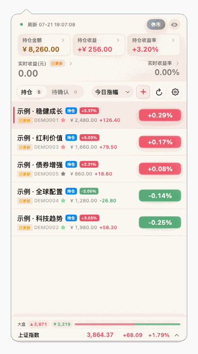
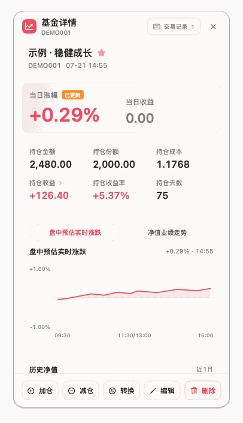

菜单栏速览
显示组合今日收益、收益率或简洁图标，支持红绿涨跌色与系统单色，随手一眼就知道今天怎么样。
没有自有账号，没有云端后台，没有广告。打开菜单栏，一眼看清今天赚了多少、 手里哪些基金在涨、哪只在拖后腿。

从记录一笔加仓，到看清组合的长期收益曲线。Red Fund 把日常真正会用的部分做扎实，不做花架子。
显示组合今日收益、收益率或简洁图标，支持红绿涨跌色与系统单色，随手一眼就知道今天怎么样。
按金额或份额维护持仓，记录加仓、减仓、基金转换和待确认操作，成本与持有天数自动算清楚。
官方净值、盘中估值、更新时间、市场指数与全市场涨跌概览，历史估值偏差还会自动统计成准确率。
五项指标归一加权成 0–1 评分，划分高位/低位区间与七档操作建议，并附上策略回测的胜率与超额收益。
今日与持仓收益排行、累计收益曲线、每日盈亏日历——赚在哪天、亏在哪笔，都有据可查。
用户主动登录后，先预览差异、再同步持仓、交易与历史收益。登录完全可选，且可以随时退出。
区分交易与休市时段自动刷新；支持每日提醒与涨跌档位通知，重要波动不会被错过。
持仓导入、导出、旧版迁移、会话清理与本地数据删除一应俱全，账本始终握在自己手里。
原生 SwiftUI 绘制，自动适配浅色与深色模式。下面是两套主题下的持仓列表与基金详情。

以上截图使用完全虚构的示例组合，不包含任何真实持仓数据。
没有自有账号，没有云同步，也没有数据后台。Red Fund 不收集、不上传你的账本。
~/Library/Application Support/red-fund/ ├── portfolio.json ├── settings.json └── portfolio-performance.json
仅支持 macOS 14 Sonoma 或更高版本，以及 Apple Silicon（M1 及以上）芯片。
打开 Latest Release，下载文件名以 arm64-swift.dmg 结尾的安装包。
打开 DMG，把 RedFund.app 拖进「应用程序」文件夹。
若被系统拦截，在 Finder 中按住 Control 单击 RedFund，选择「打开」，再在弹窗里点一次「打开」。
在菜单栏找到 Red Fund 图标即可开始使用。应用不会在 Dock 常驻。
关于没有 Apple 开发者签名的说明。发布包未经过 Apple 公证，macOS 的 Gatekeeper 会拦截首次打开。若提示应用「已损坏，无法打开」，可在终端清除下载隔离标记：
xattr -cr /Applications/RedFund.app
更多说明见仓库中的隐私政策与免责声明。
~/Library/Application Support/red-fund 目录，再迁移到新设备。swift build 与 swift test 即可构建和测试，npm run dev 可一键构建并启动本地应用。一个安静的小工具，也是一份读得懂的代码。欢迎提交可复现的问题、范围明确的建议，以及聚焦的 Pull Request。


git clone https://github.com/Yoosen/RedFund.git cd RedFund swift build swift test npm run dev # 构建并启动本地应用